Clinical Approach to the Wrist & Hand, Part 1
- Distal radius fracture (FOOSH, very common): read the x-ray for three things. Crooked? Normal tilt is ~12° palmar; tilted back past neutral is too crooked and forearm rotation suffers. Short? The radius should sit a little longer than the ulna; too short and the ulna jams into the carpus. Smooth? An articular step over 1 mm leads to arthritis.
- Treatment is age-dependent: forgiving in the very young and very old, least forgiving in active middle age. Analgesia (hematoma block), closed reduction (traction, exaggerate, correct), a 3-point-molded cast that isn't tight. If that fails, surgery. Then rehab.
- Scaphoid: the most common carpal fracture, in the young. Its blood supply is retrograde (enters distally), so waist and proximal-pole fractures risk nonunion and osteonecrosis. Snuffbox tenderness with a normal x-ray: treat it as fractured (cast) and get CT or MRI.
- Undisplaced or distal scaphoid fractures get a cast until union (6–8 weeks). Displaced or proximal pole fractures get surgery (a compression screw).
- Hand compartments. Thenar (APB, FPB, opponens pollicis): recurrent branch of the median. Hypothenar (ADM, FDM brevis, opponens digiti minimi): deep branch of the ulnar. Lumbricals: lateral two median, medial two ulnar. Adductor pollicis and all the interossei: deep ulnar. PAD = 3 palmar interossei adduct; DAB = 4 dorsal interossei abduct, toward or away from the middle finger.
- Carpal tunnel (flexor retinaculum from scaphoid + trapezium to pisiform + hook of hamate): FDS ×4, FDP ×4, FPL and the median nerve. The superficial palmar arch is mainly ulnar; the deep arch mainly radial.
Learning Objectives
- Identify the distinguishing features of the bones and joints of the upper extremity and relate them to their appearance on plain radiographs.
- Identify the major arteries and veins of the upper extremity, and the hand muscles.
- Identify the carpal tunnel and the structures passing through it.
- Explain the mechanisms, management principles and potential complications of distal radius and scaphoid fractures.
- List the features of carpal tunnel syndrome and describe its management (in Part 2).
Dr. Charys Martin (joints and soft tissues of the hand, 33 minutes) and Dr. Ken Faber (distal radius and scaphoid fractures, 29 minutes), about 64 minutes in all. This is Part 1 of a two-part module; carpal tunnel syndrome is in Part 2. The carpal bones themselves were in 8.5, the snuffbox and forearm tendons in 8.6, and the ulnar canal in 8.7.
Joints of the Hand
All are synovial, each supported by a capsule and ligaments, like small elbows. The distal radioulnar and intercarpal joints also exist, wrapped in strong ligaments, but aren't detailed.
| Joint | Type | Point |
|---|---|---|
| CMC, digits 2–5 | Plane | Sliding joints, like the AC joint |
| CMC, thumb | Saddle | Allows opposition: what sets our hand apart |
| MCP | Condyloid | Multiaxial (flexion, extension, abduction, adduction, circumduction); capsule + medial and lateral collateral ligaments |
| IP (PIP, DIP) | Hinge | Capsule + medial and lateral collateral ligaments |
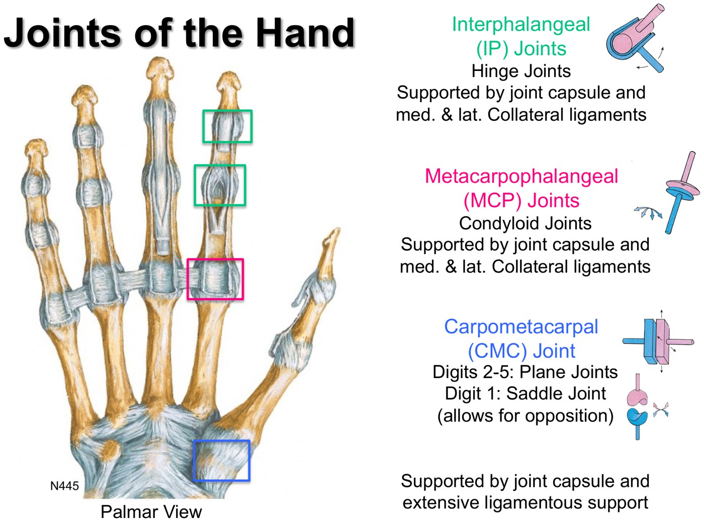
Distal Radius Fractures
Dr. Faber's first recording.
Reading the X-ray: Crooked, Short, Smooth
A very common injury from a fall on an outstretched hand, with localized pain. If the anatomy isn't restored, function is poor, particularly in young, active people. Ask three questions of every film.
| Question | How to read it | If it's abnormal |
|---|---|---|
| 1. Is it crooked (bent)? | On the lateral, draw the long axis of the radius and a tangent across its joint surface. Normally the surface tilts toward the palm, about 12° of palmar tilt. Tilted back past neutral = too crooked. | The distal radioulnar joint is thrown out of line (asymmetric on CT), so forearm rotation becomes restricted |
| 2. Is it short? | At the DRUJ the radius normally sits a little longer than the ulna. Some people are born with a short radius, so compare with the other side. | Ulnar impaction syndrome: the ulna jams into the carpus (the triquetrum), and the cartilage frays into arthritis |
| 3. Is the joint surface smooth? | Trace the joint outline: it should be uninterrupted. A gap is okay; a step isn't. | A step over 1 mm (2 mm or more) leads to post-traumatic radiocarpal arthritis (pain, stiffness). In the young the only good fix is a fusion. |
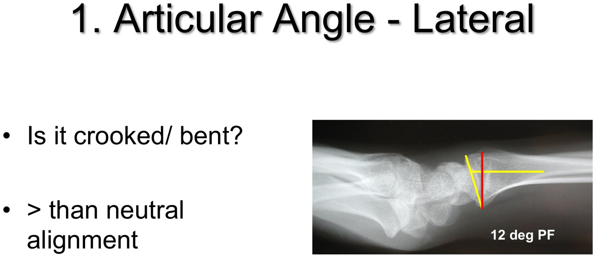
Normal: 12° palmar tilt. Slide from the deck.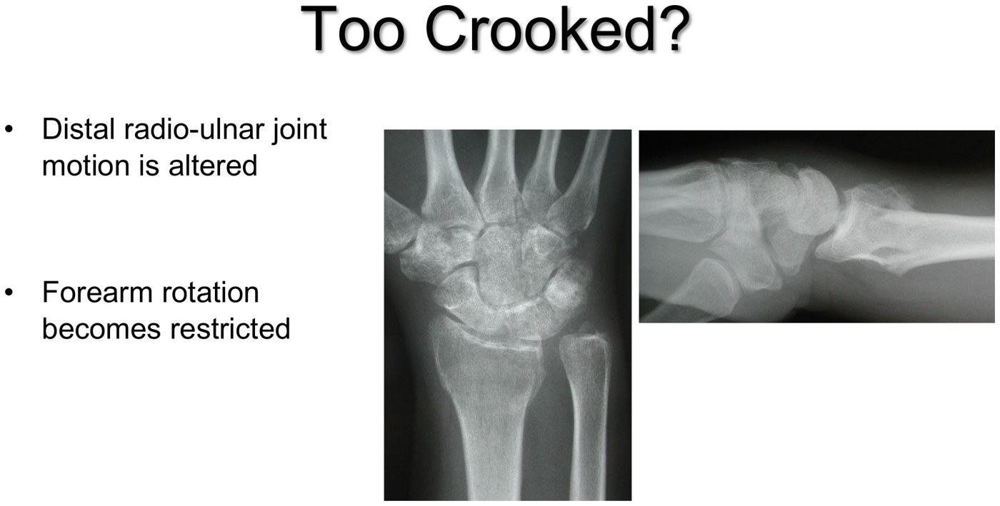
Too crooked: the DRUJ is thrown out. Slide from the deck.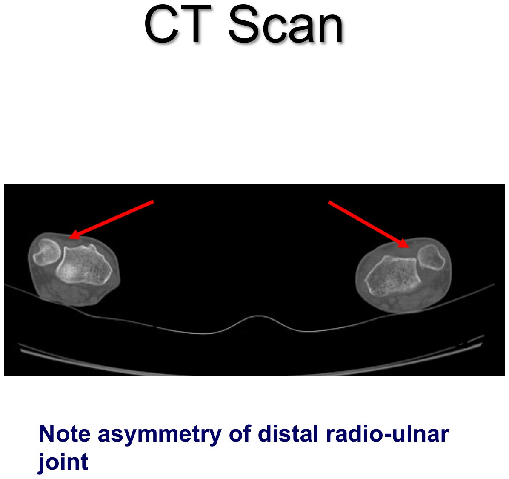
CT: DRUJ asymmetry, injured vs uninjured. Slide from the deck.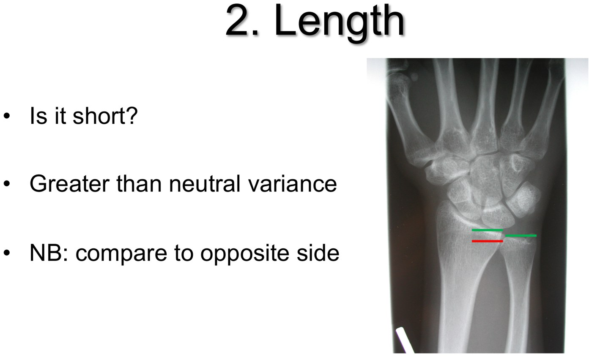
Length: compare to the other side. Slide from the deck.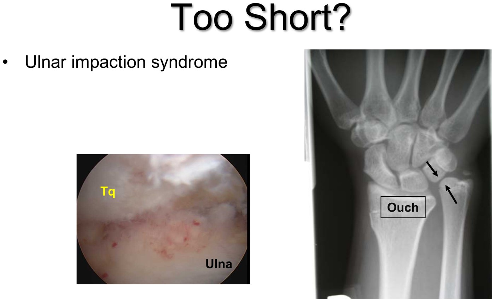
Too short: ulnar impaction. Slide from the deck.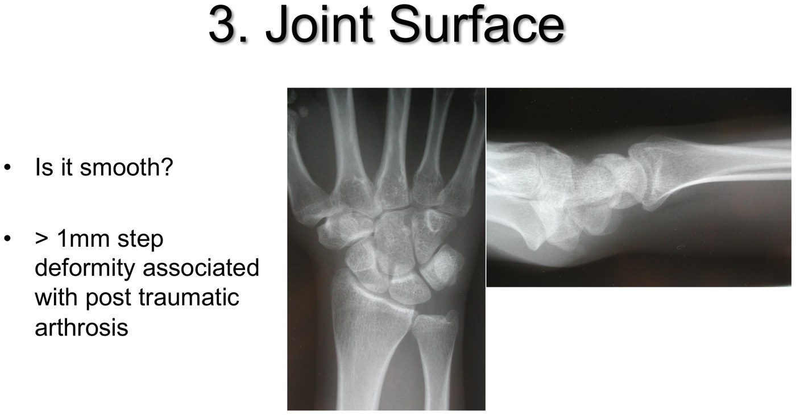
Smooth? Over 1 mm of step means arthrosis. Slide from the deck.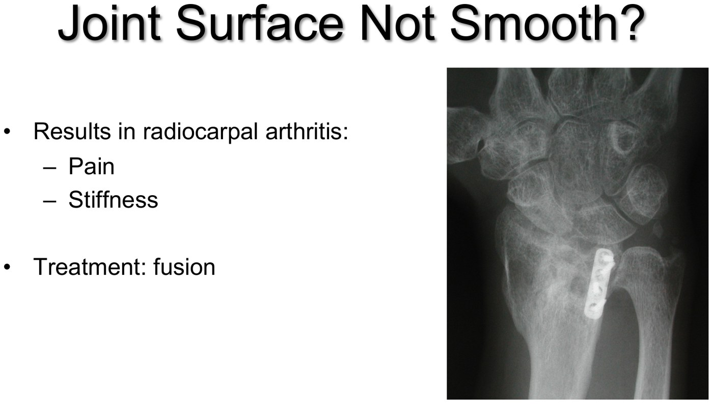
Not smooth: arthritis, then fusion. Slide from the deck.Treating a Distal Radius Fracture
Treatment is forgiving at the extremes of age. In the very young, fast-growing bone remodels itself straight. The elderly put lower demands on the wrist and have laxer ligaments, so a crooked result bothers them less. Active middle-aged people are the ones who suffer if the alignment isn't restored.
A hematoma block (local anaesthetic injected straight into the fracture hematoma), regional anaesthesia (block the nerves higher up), or conscious sedation (IV drugs in the other arm).
(1) Traction against countertraction on the arm (by hand, or finger traps with a weight on the humerus) to restore length. (2) Increase the deformity to unlock the fragments. (3) Correct the deformity and lock the piece in place.
Padding first. Press on the distal forearm and the hand, and gently up at the fracture site. Well molded doesn't mean tight. Follow with weekly x-rays in clinic.
External fixation (pins through the skin joined by carbon-fibre rods, ± fine wires) or open reduction and internal fixation with a volar plate.
Get the motion and strength back once the fracture has healed.
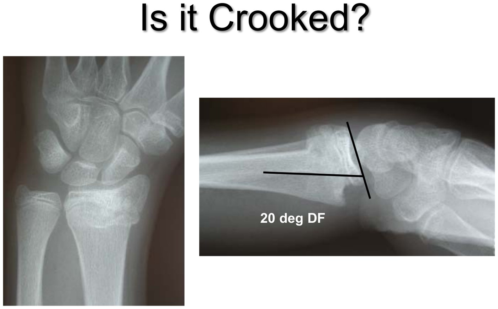
20° dorsal tilt (normal is 12° palmar): reduce it. Slide from the deck.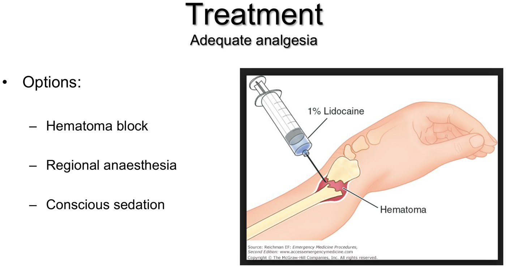
Hematoma block. Slide from the deck.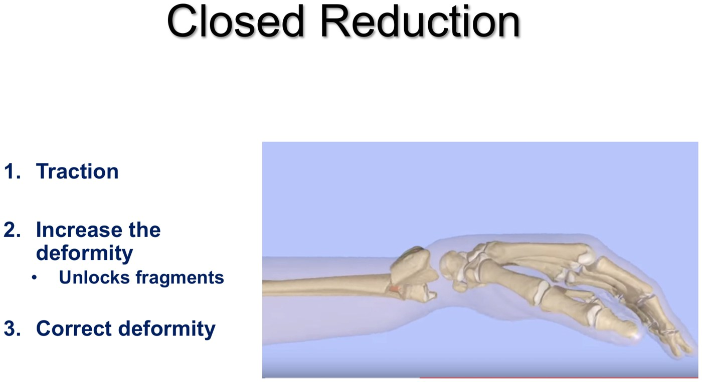
Closed reduction in three moves. Slide from the deck.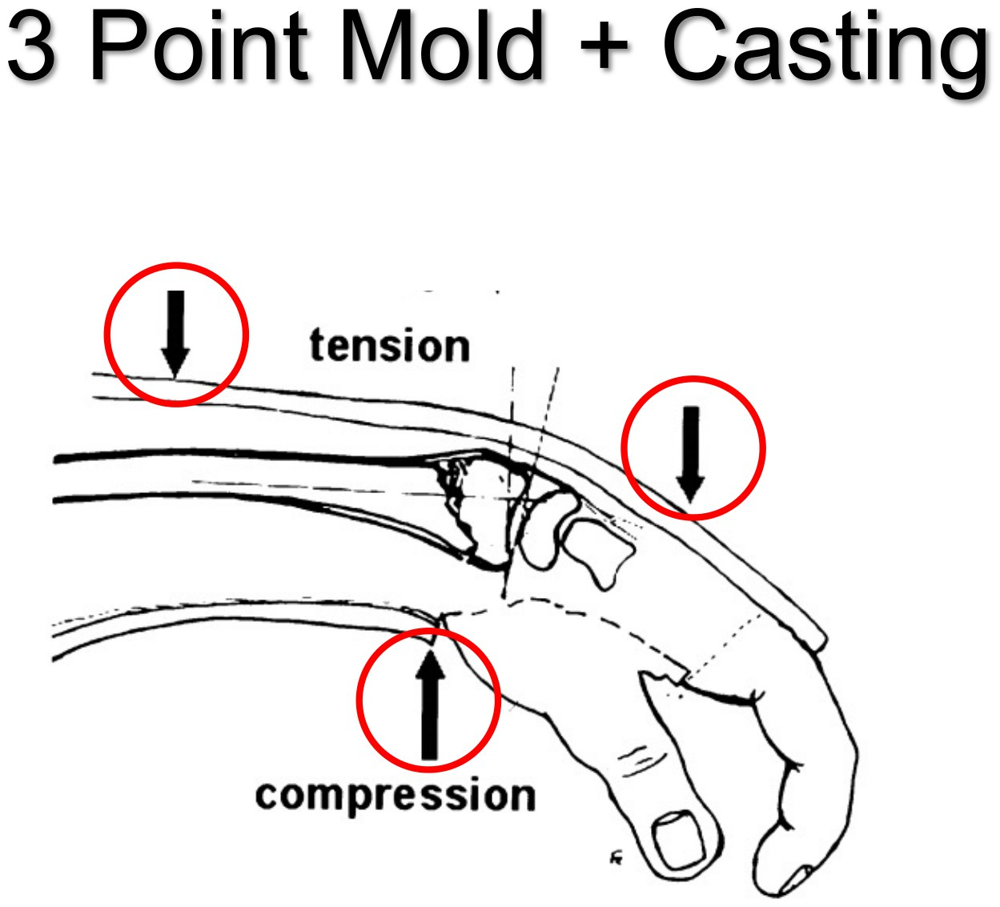
3-point mold. Slide from the deck.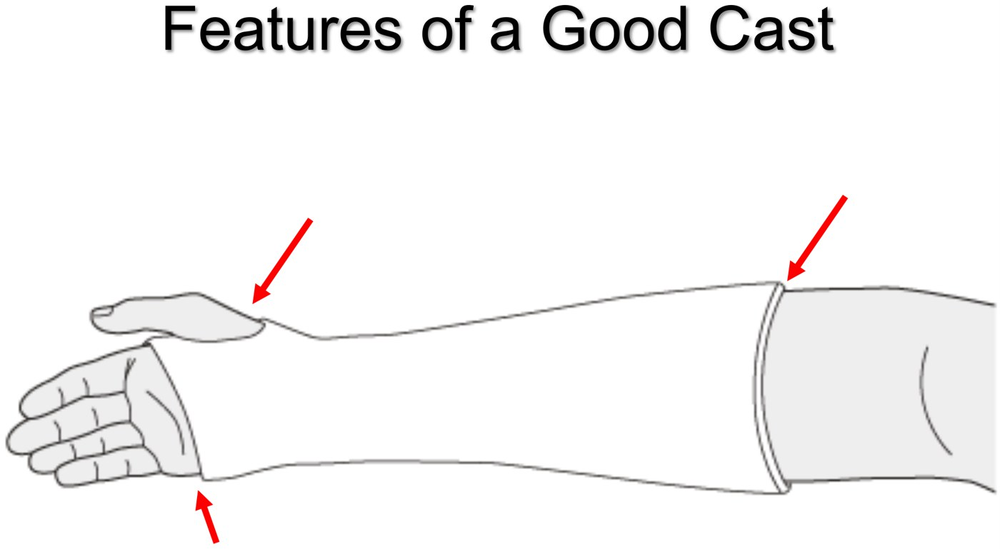
A good cast frees the thumb, the knuckles and the elbow. Slide from the deck.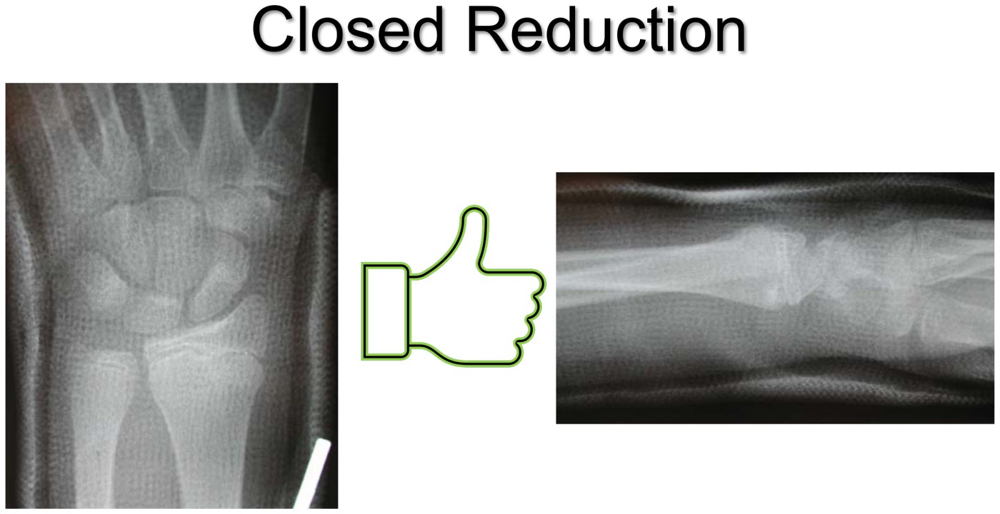
A successful closed reduction. Slide from the deck.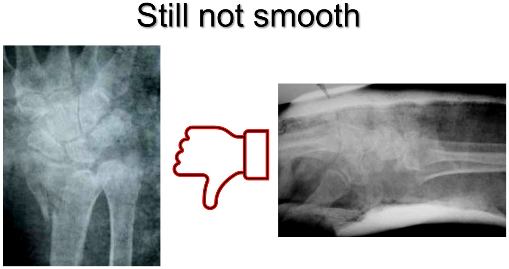
Still not smooth after reduction: surgery. Slide from the deck.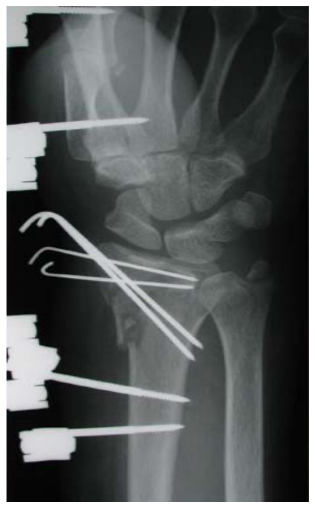
External fixation. X-ray from the deck; the photo of the frame on an arm is left out.| Casting choice | Pros | Cons |
|---|---|---|
| Plaster of Paris | Cheaper; easily molded | Poor resistance to water; heavy (low strength-to-weight ratio) |
| Fiberglass | Light yet strong; waterproof options; more radiolucent | Expensive; harder to mold |
| Padding | Cotton: cheap, used under either. Synthetic: waterproof. |
A good cast isn't too tight, leaves room at the base of the thumb so it can move, stops short of the MCP joints so the fingers can bend, and is short enough to bend the elbow.
The volar plate, in words (from the surgical video): an incision over the volar distal forearm, along the flexor carpi radialis tendon, which is pulled aside. FPL is retracted toward the ulna, and pronator quadratus is lifted off the radius, since the fracture is almost always underneath it. The hematoma is cleaned out, the pieces are put back together like a jigsaw, and a titanium plate is fixed with screws.
Scaphoid Fractures
Dr. Faber's second recording.
Why the Scaphoid Is Different
The most common carpal fracture, usually in young people, typically from a FOOSH. Most heal uneventfully, but they're sometimes hard to diagnose. A patient who writes it off as a sprain may come back in midlife with the complications. Delayed diagnosis is associated with complications.
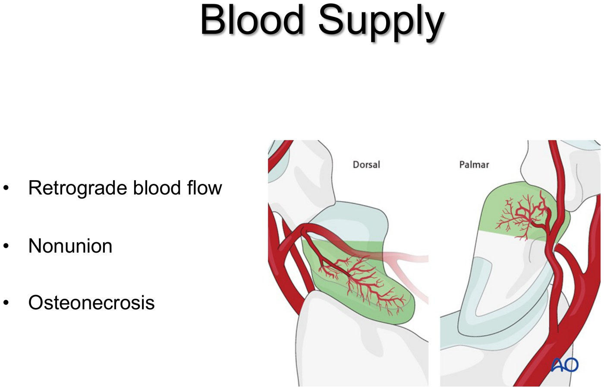
Retrograde blood supply. Slide from the deck.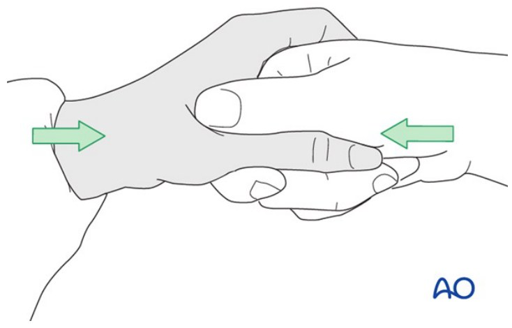
Push–pull test on the thumb. Drawing from the deck; the photo of a swollen wrist is left out.Branches of the radial artery enter the scaphoid distally (the dorsal ridge and the palmar tubercle) and run backwards to the proximal pole. A fracture through the waist (the most common site) or the proximal pole cuts the proximal fragment off from its blood. That risks nonunion (it never heals) and osteonecrosis (avascular necrosis: the bone dies and crumbles), and later arthritis. A distal fracture keeps its blood supply.
| Exam finding | How |
|---|---|
| Swelling | The anatomical snuffbox fills in with blood and loses its hollow |
| Localized tenderness | In the snuffbox (the waist), over the scaphoid tubercle (the distal pole) and dorsally |
| Push–pull test | Pull the thumb, then push it in: loading the scaphoid through the thumb metacarpal hurts at the base of the thumb |
Imaging and Treatment
Plain x-rays are usually enough. But if the mechanism fits (a fall off a bike or a skateboard) and the scaphoid is swollen and tender, a normal x-ray doesn't rule it out. Treat it as fractured (cast) and get additional imaging, CT or MRI, or re-evaluate 10–14 days later.
| Fracture | Treatment | Why |
|---|---|---|
| Undisplaced, or distal (e.g. the tubercle) | Cast until union, about 6–8 weeks (a short arm cast; CT confirms healing, since it's hard to see on x-ray) | A distal piece keeps its blood supply |
| Displaced, or proximal pole | Surgery: reduce it and fix it with a screw (e.g. through a volar approach, moving the FCR tendon aside) | Poor blood supply: high risk of nonunion and osteonecrosis |
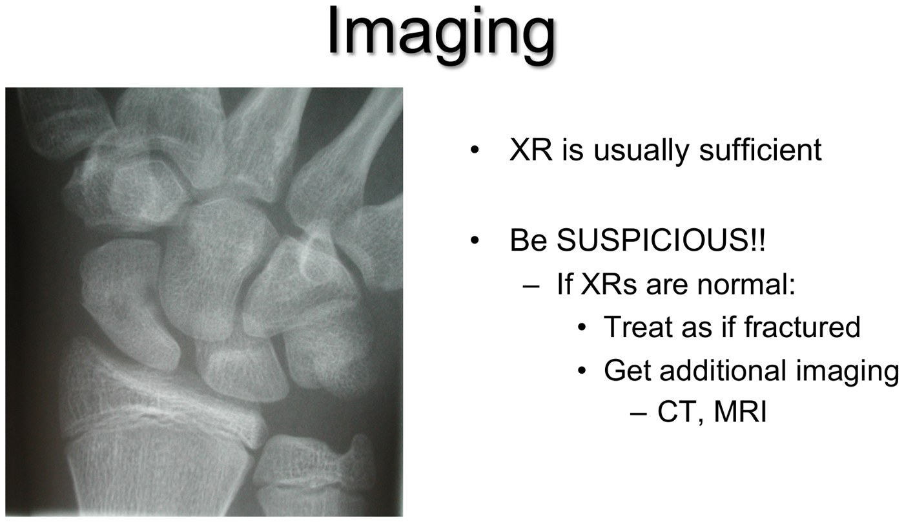
Be suspicious of a normal x-ray. Slide from the deck.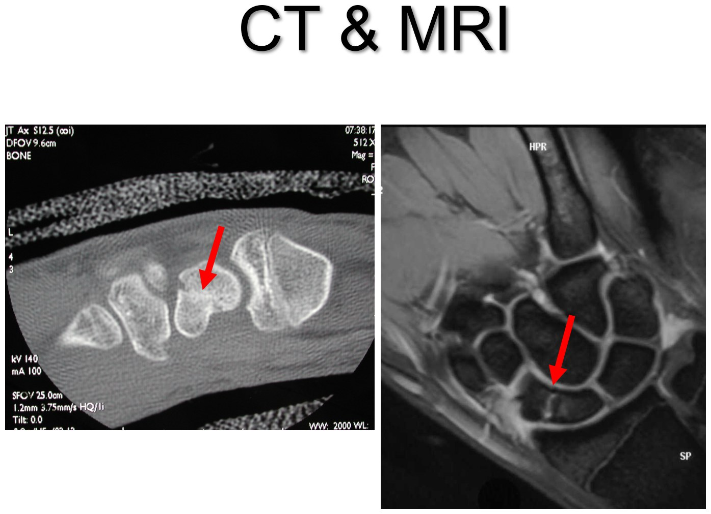
CT and MRI show the waist fracture. Slide from the deck.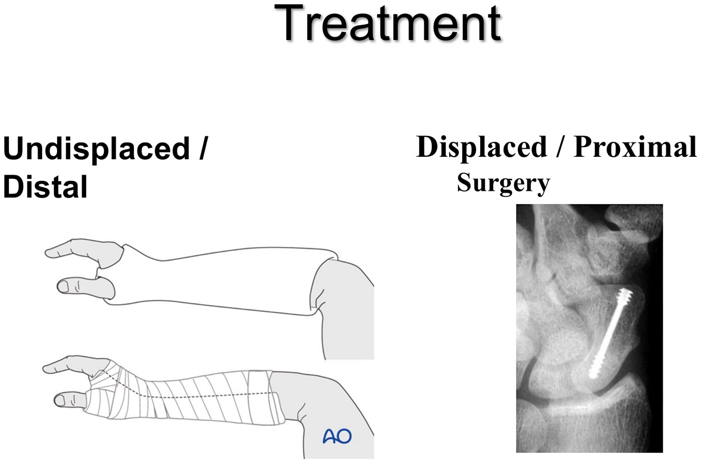
Cast vs screw. Slide from the deck.| Case | Findings | Plan |
|---|---|---|
| 1. Scaphoid tubercle fracture | Distal, good blood supply | Cast |
| 2. 25-year-old, fell off a skateboard | X-rays look nearly normal; CT shows an undisplaced waist fracture | Cast; healed on CT at 8 weeks |
| 3. Football player | Displaced proximal pole fracture | Surgery: a screw whose coarser trailing threads grip more bone, compressing the fracture to stimulate healing |
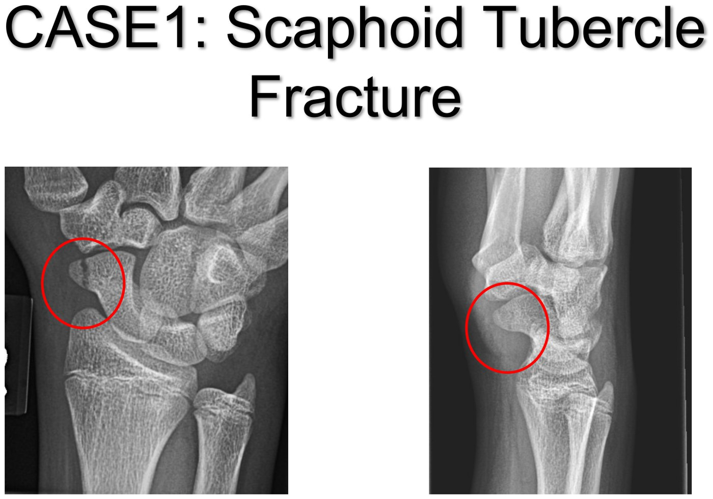
Case 1: tubercle fracture. Slide from the deck.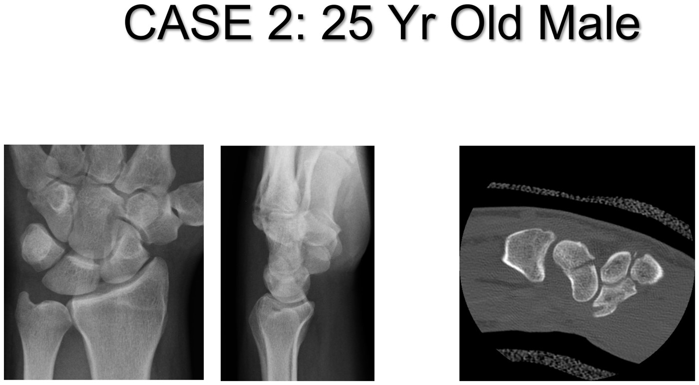
Case 2: the x-ray misses it, the CT doesn't. Slide from the deck.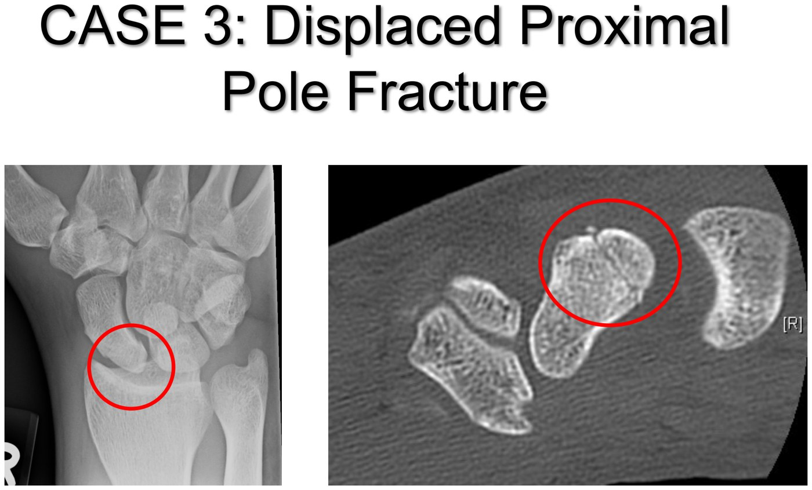
Case 3: displaced proximal pole. Slide from the deck.Complications
| Complication | The story |
|---|---|
| Osteonecrosis | An old fracture treated as a sprain: the proximal fragment's blood supply failed and the bone is crumbling |
| Nonunion | A “sprain” splinted 5–6 years earlier but never x-rayed. With no arthritis yet: operate, fix with a screw. With arthritis: an arthritis operation. |
| Late arthrosis | The end point of untreated nonunion or necrosis; treated with a fusion (the wrist still rotates but no longer flexes or extends) |
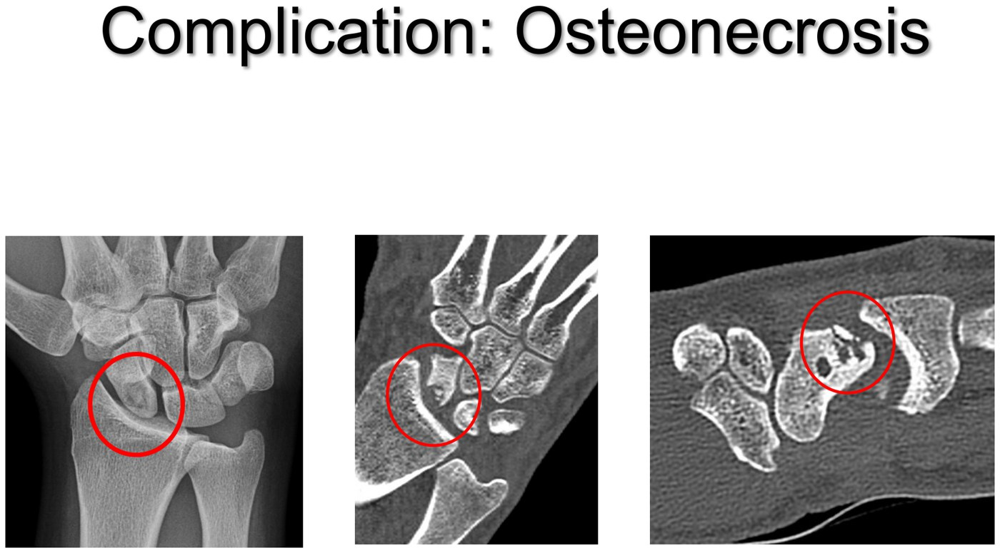
Osteonecrosis. Slide from the deck.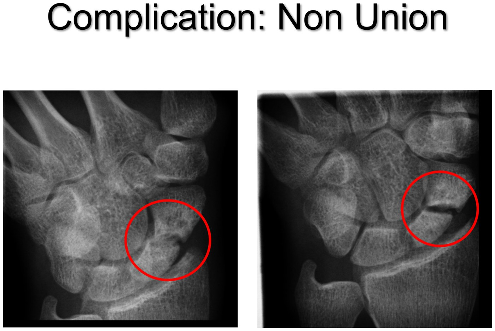
Nonunion. Slide from the deck.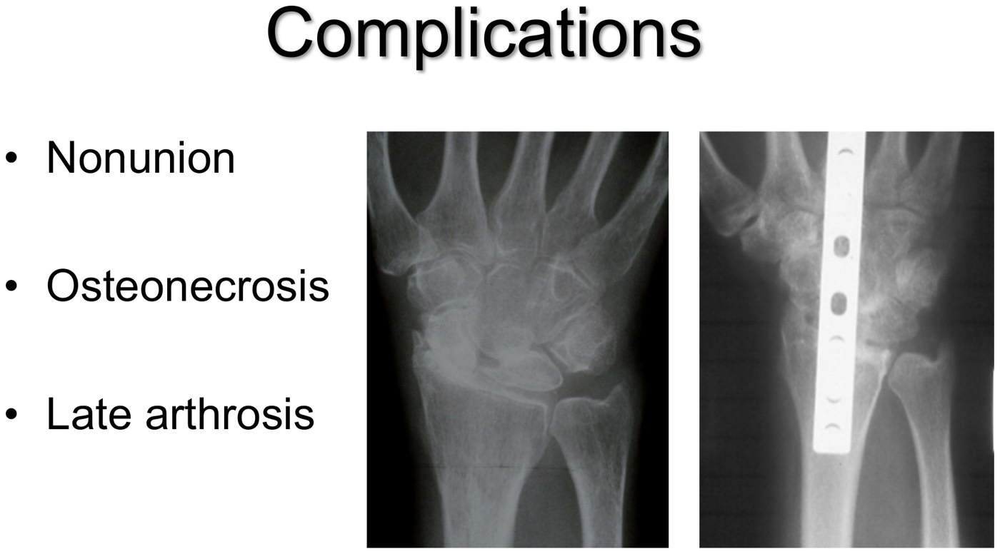
Late arthrosis ends in fusion. Slide from the deck.Soft Tissues of the Hand
Dr. Martin's recording, with her anatomy notes.
Fascia, the Carpal Tunnel and the Compartments
| Structure | What it is |
|---|---|
| Palmar carpal ligament | A thickening of the antebrachial fascia, continuous with the extensor retinaculum; superficial and proximal to the flexor retinaculum |
| Flexor retinaculum | Deeper and more distal: the roof of the carpal tunnel, from the scaphoid and trapezium to the pisiform and hook of the hamate |
| Palmar aponeurosis | Thick longitudinal fibres from the retinaculum to the medial four digits, blending into their fibrous sheaths. Palmaris longus inserts into it. Its septa divide the hand into compartments. |
| Through the carpal tunnel (deep to the retinaculum) | Over it (superficial) |
|---|---|
| FDS (4 tendons), FDP (4 tendons), FPL, and the median nerve | Ulnar nerve and artery (in Guyon's canal), the palmar branch of the median nerve, the palmaris longus tendon |
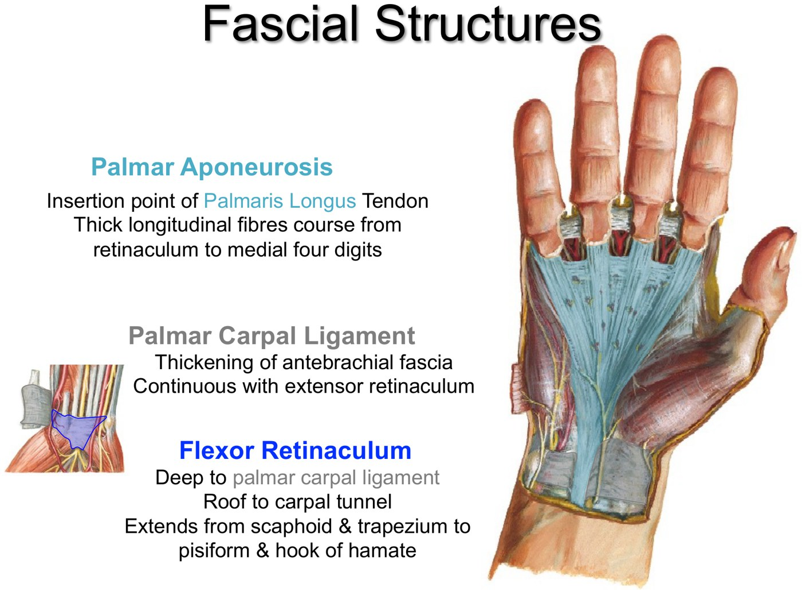
Fascial layers of the palm. Slide from the deck (Netter).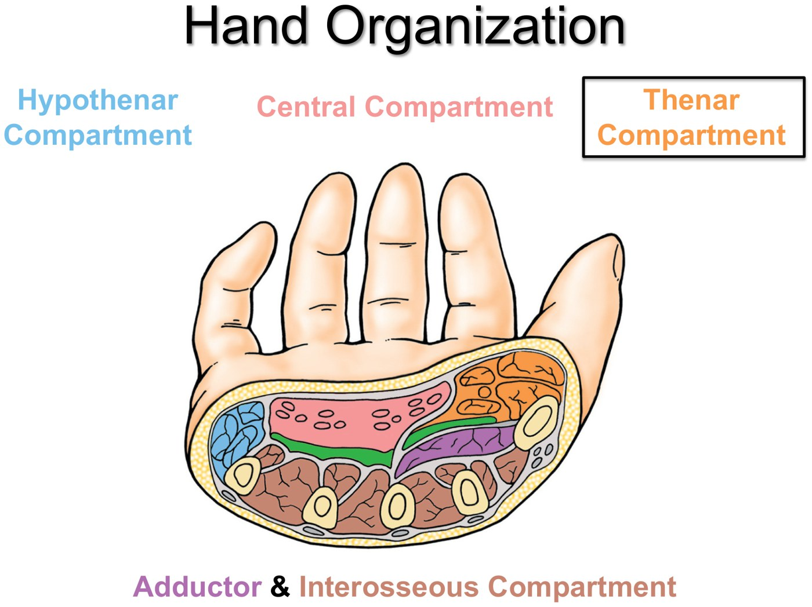
Four compartments. Slide from the deck (Netter).Intrinsic hand muscles start and end in the hand; extrinsic ones are the forearm muscles whose bellies sit outside it. The thenar eminence is the fleshy base of the thumb; the hypothenar eminence the medial side of the palm.
From the anatomy notes: an unexplained, progressive shortening, thickening and fibrosis of the palmar aponeurosis (nodules and cords) that draws the fingers into permanent flexion. The diseased fascia must be surgically excised for the patient to open the palm.
Thenar and Hypothenar Muscles
| Muscle | Origin | Insertion | Nerve | Action |
|---|---|---|---|---|
| Thenar compartment (3): recurrent branch of the median nerve | ||||
| Abductor pollicis brevis | Flexor retinaculum, scaphoid, trapezium | Lateral base of the thumb's proximal phalanx | Recurrent median | Abducts the thumb (CMC) |
| Flexor pollicis brevis | Flexor retinaculum, capitate, trapezium | Lateral base of the thumb's proximal phalanx | Recurrent median (see note) | Flexes the thumb (CMC) |
| Opponens pollicis | Flexor retinaculum, trapezium | Lateral side of the 1st metacarpal | Recurrent median | Opposition (CMC) |
| Not thenar: deeper, in the adductor compartment | ||||
| Adductor pollicis | Transverse head: 3rd metacarpal; oblique head: bases of MC 2–3, capitate | Medial base of the thumb's proximal phalanx | Deep branch of the ulnar | Adducts the thumb (CMC); helps flex the MCP |
| Hypothenar compartment (3): deep branch of the ulnar nerve | ||||
| Abductor digiti minimi | Pisiform | Medial base of digit 5's proximal phalanx | Deep ulnar | Abducts digit 5 |
| Flexor digiti minimi brevis | Flexor retinaculum, hook of hamate | Medial base of digit 5's proximal phalanx | Deep ulnar | Flexes digit 5 |
| Opponens digiti minimi | Flexor retinaculum, hook of hamate | Medial border of the 5th metacarpal | Deep ulnar | Opposes digit 5 (toward the thumb) |
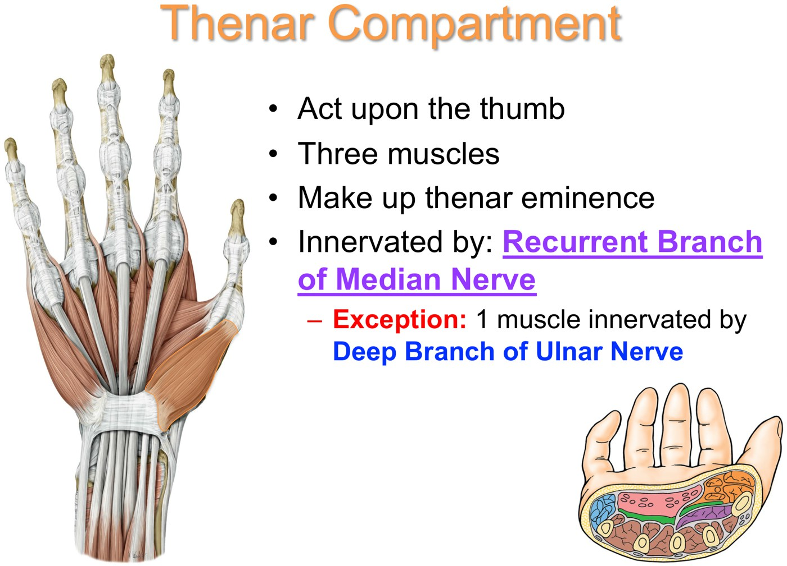
Thenar compartment. Slide from the deck (Netter).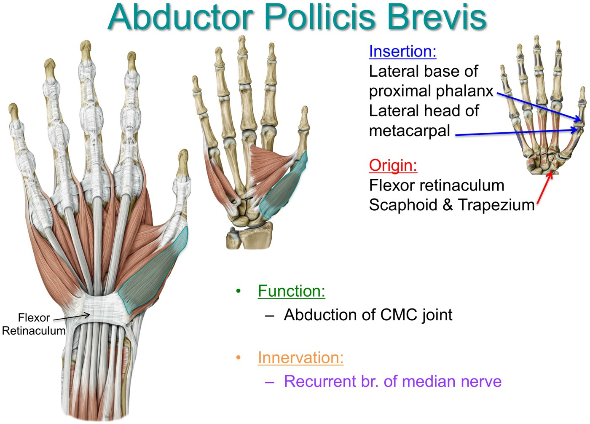
Abductor pollicis brevis. Slide from the deck.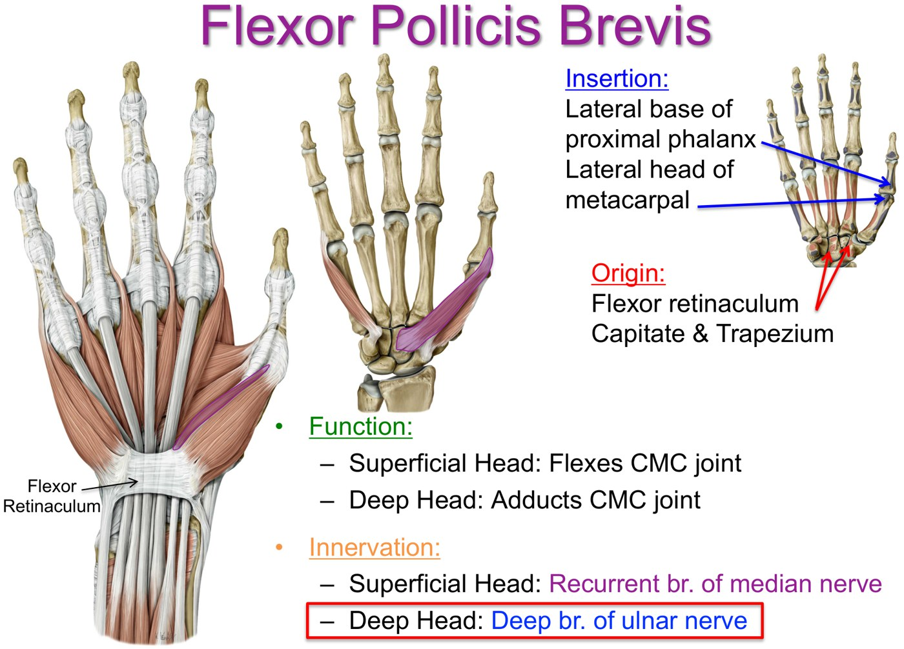
Flexor pollicis brevis. Slide from the deck.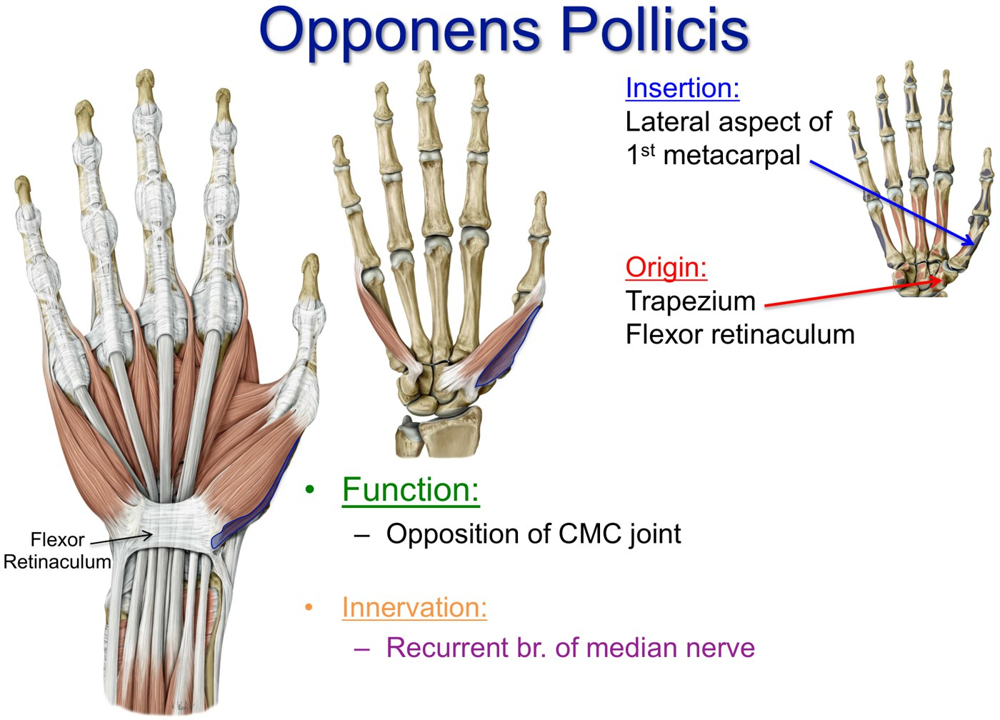
Opponens pollicis. Slide from the deck.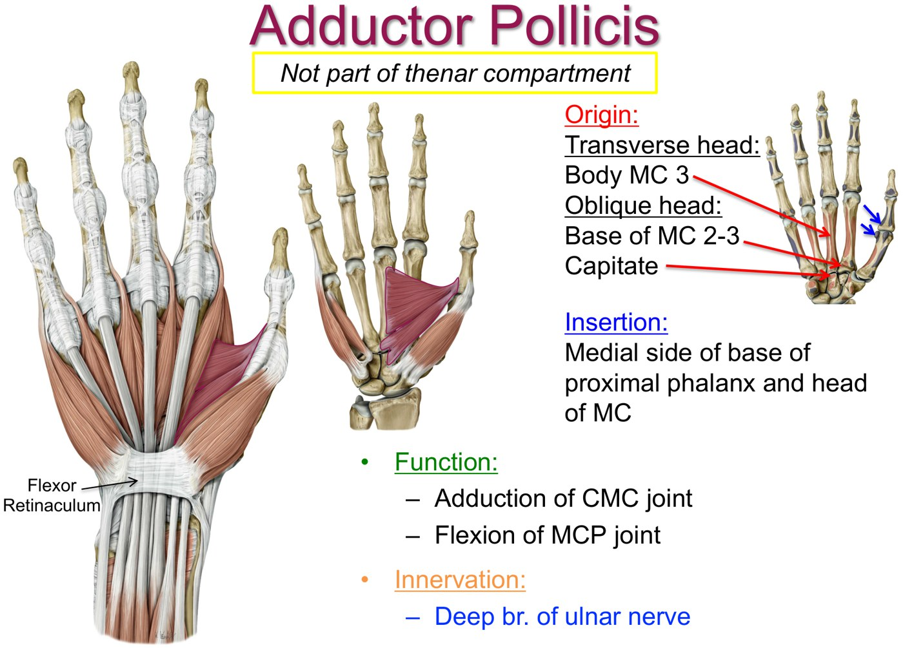
Adductor pollicis. Slide from the deck.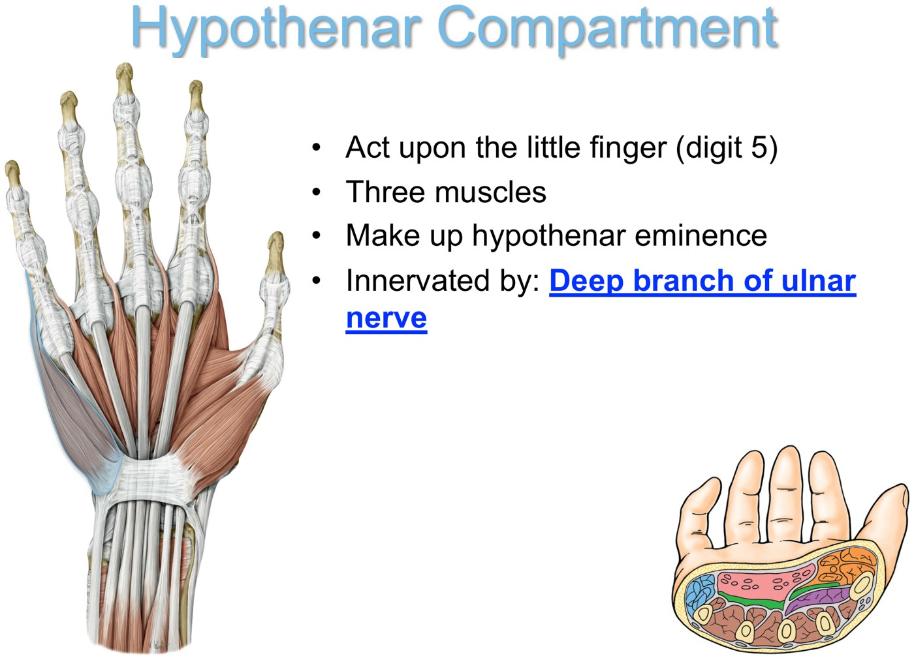
Hypothenar compartment. Slide from the deck (Netter).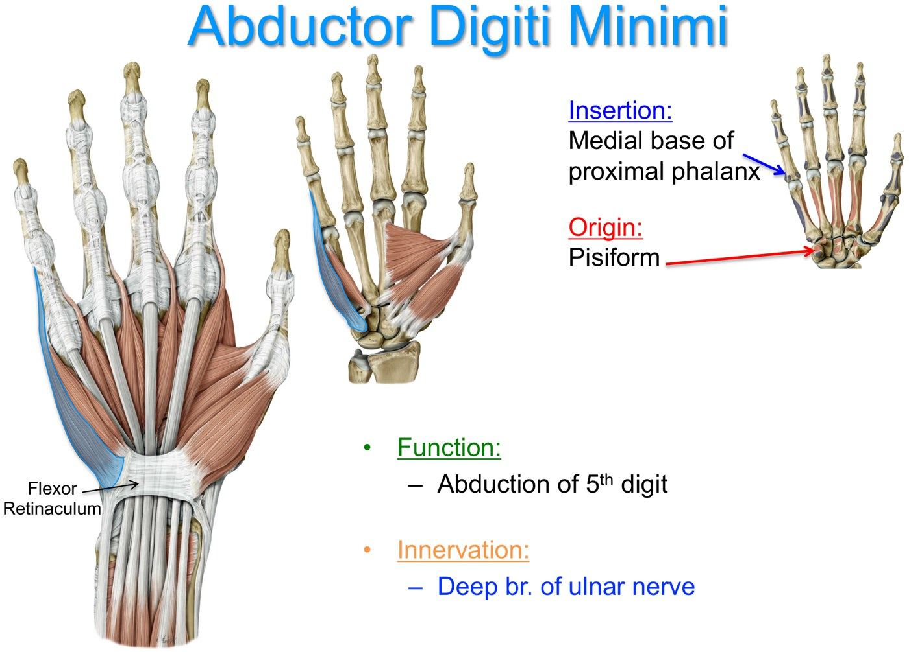
Abductor digiti minimi. Slide from the deck.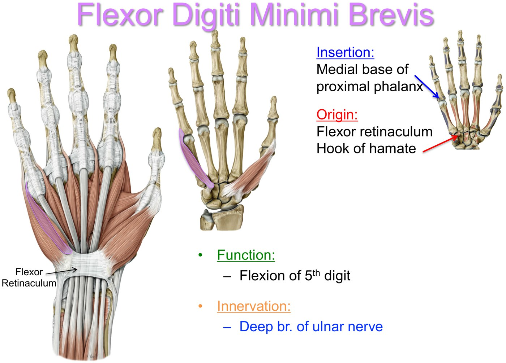
Flexor digiti minimi brevis. Slide from the deck.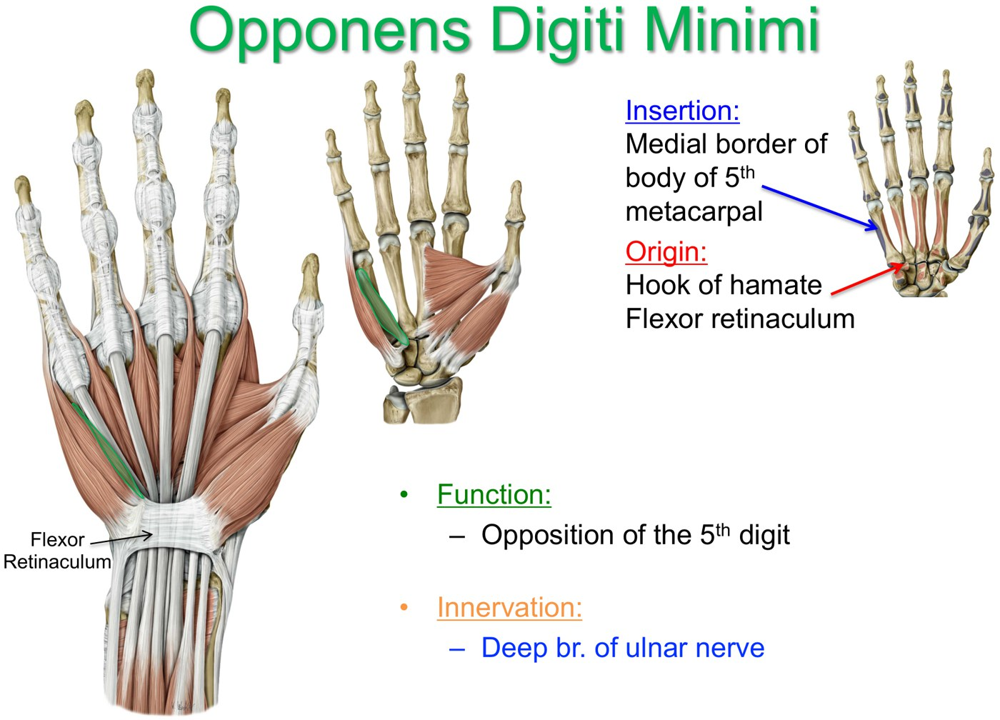
Opponens digiti minimi. Slide from the deck.Flexor pollicis brevis note: the notes and slide split it into a superficial head (recurrent median: flexes) and a deep head (deep ulnar: adducts), which is the slide's “1 exception”. Dr. Martin: for this course, treat FPB as fully thenar, supplied by the recurrent median. There's no flexor digiti minimi longus in a typical human; it's a rare variant, common in other mammals, which is why the hand's one is “brevis”.
Lumbricals and Interossei
The central compartment, under the palmar aponeurosis, carries the long flexor tendons (FDS splitting so FDP can pass to the distal phalanx) and the lumbricals. The deepest adductor-interosseous compartment holds adductor pollicis and the interossei (“between the bones”).
| Muscle | From → to | Nerve | Action |
|---|---|---|---|
| Lumbricals (4, “worm-like”) | Arise from the FDP tendons → lateral side of the extensor expansions, digits 2–5 | Lateral two: median; medial two: deep ulnar (they follow their FDP tendons) | Flex the MCP and extend the IP joints (the “Z” movement: fingers straight, knuckles bent) |
| Palmar interossei (3) | Side of MC 2, 4, 5 facing the midline → the same side of the proximal phalanx / expansion | Deep ulnar | PAD: adduct digits 2, 4, 5 toward the middle finger |
| Dorsal interossei (4) | Adjacent sides of two metacarpals → the outer side of digits 2–4 | Deep ulnar | DAB: abduct digits 2–4 from the midline. The middle finger gets two: it can abduct either way. |
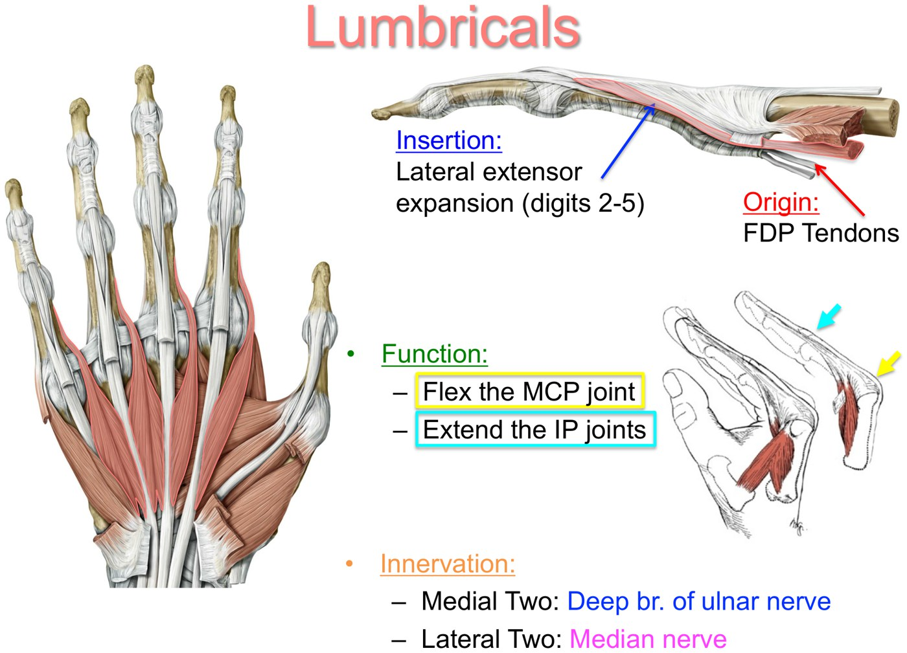
Lumbricals. Slide from the deck.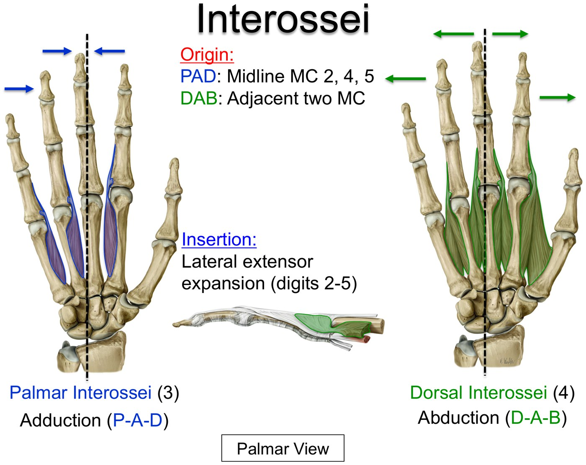
PAD and DAB. Slide from the deck.In the hand, abduction and adduction are measured from the middle finger, not the body's midline. Both palmar and dorsal interossei lie between the metacarpals; the palmar ones are just more anterior. The 1st dorsal interosseous and adductor pollicis make up the web between thumb and index finger.
Bedside tests (from the notes): dorsal interossei, spread the fingers against resistance; palmar interossei, hold a sheet of paper between adjacent fingers while you tug; adductor pollicis, grip paper between thumb and index finger.
Digital Sheaths and the Palmar Arches
| Sheath | What | Function |
|---|---|---|
| Fibrous digital sheaths | Osseofibrous canals binding the long tendons to the phalanges | A pulley system for the long tendons' force; without them the tendons bowstring |
| Synovial sheaths | Bursae of synovial fluid round the tendons in the fibrous canals | Lubricate the tendons and cut friction (they can also form synovial cysts) |
From the notes: an injury can infect a digital sheath, giving tenosynovitis, a swollen finger that's painful to move. Each digit has its own sheath, so infection usually stays in that finger, but it can spread through connections to the common flexor sheath and into the anterior forearm.
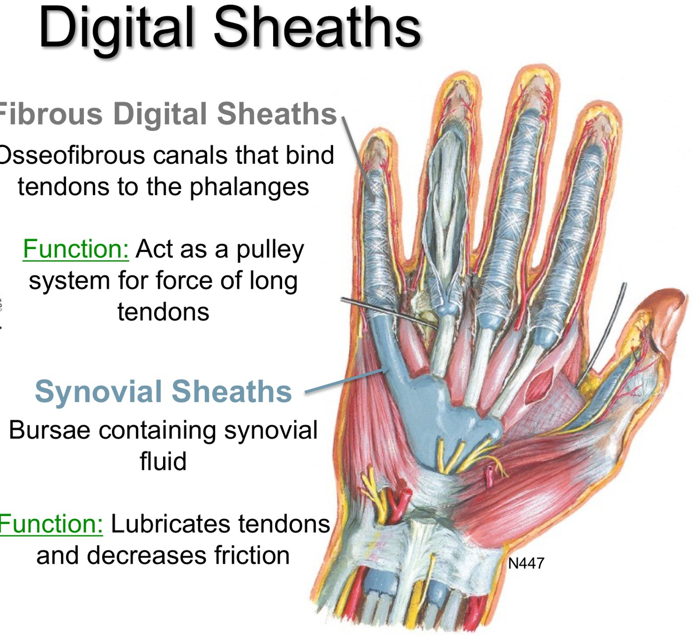
Fibrous and synovial sheaths. Slide from the deck (Netter); the photo of a bowstringing finger is left out.| Arch | Main contributor | Completed by | Where / branches |
|---|---|---|---|
| Superficial palmar arch | Ulnar artery (entering via Guyon's canal, superficial to the flexor retinaculum) | Superficial palmar branch of the radial artery | Just deep to the palmar aponeurosis, superficial to the tendons; gives the common palmar digital → proper palmar digital arteries |
| Deep palmar arch | Radial artery (after the snuffbox it dives between the heads of the 1st dorsal interosseous) | Deep branch of the ulnar artery | Across the metacarpals just distal to their bases, deeper than the tendons; gives the palmar metacarpal arteries. The radial artery also gives the princeps pollicis (thumb) and radialis indicis (index). |
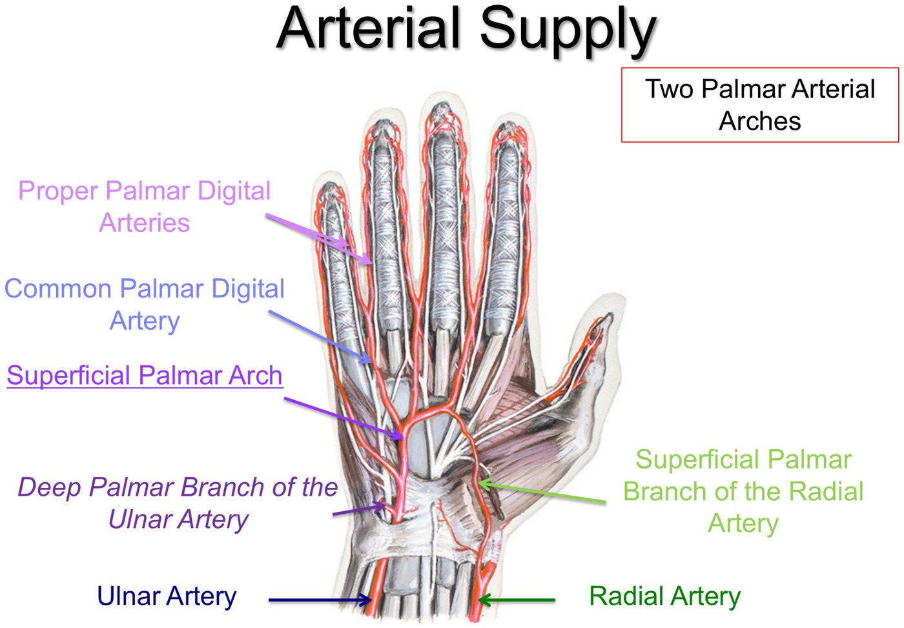
Superficial arch: mainly ulnar. Slide from the deck (Netter).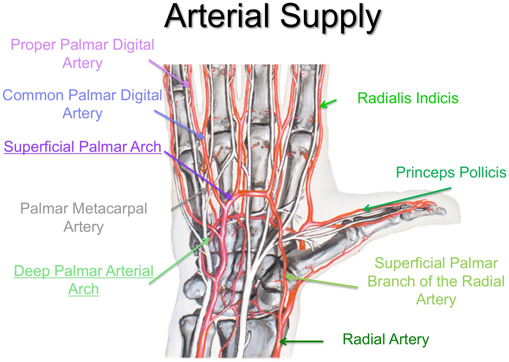
Deep arch: mainly radial. Slide from the deck (Netter).Knowledge checks
An 18-year-old slices her palm and cuts only the recurrent branch of the median nerve. Which thumb movement does she lose? → opposition (opponens pollicis). Adduction is ulnar, and flexing the distal phalanx is FPL (anterior interosseous).
A dissection with an arrow on the arch in the palm (a photograph, so not shown): its main blood supply? → the ulnar artery. It's the superficial palmar arch.
Built from Drs. Caitlin Cassidy, Ken Faber and Charys Martin's “Clinical Approach to the Wrist & Hand Part 1” module: the four recordings (joints of the hand, distal radius fractures, scaphoid fractures, soft tissues of the hand), the knowledge checks, the 68-slide detailed deck and Dr. Martin's notes. Left out and described in text: the photos of patients (age groups, a swollen wrist, an external fixator on an arm, a bowstringing finger), the operative photographs and the cadaver knowledge check. Notes: flexor pollicis brevis is split by head in the notes and slides but treated as wholly recurrent median in the recording (followed here). Dr. Faber's summary suggests re-evaluating a suspected scaphoid fracture 10–14 days later; the slide says to get CT or MRI. Both are on the page. Caption corrections: Ken Faber (“Ken Pepper”), distal radius (“just radius”), FOOSH (“Foose”), ulna (“owner”), ulnar impaction (“all the imperfections”, “arm impaction”), triquetrum (“trunk question”), volar surface (“bowl or surface”), flexor carpi radialis (“flexor cooperative”), flexor pollicis longus (“flux hypothesis longest”), pronator quadratus (“prenatal quadratics”), scaphoid (“skateboard”, “Gatewood”, “scaffold”), anatomical snuffbox (“anatomic stock box”, “Starbucks”), avascular necrosis (“a vascular necrosis”), fascia (“fashion”), palmar aponeurosis (“palmar upon neurosis”), retinaculum (“retina column”, “Gulam”), hook of the hamate (“hook up the hammy”), thenar and hypothenar (“thinner”, “hypo Zener”), pollicis (“policies”, “Pollock's”), opponens (“opponents”), digiti minimi (“Deji Mini-Me”), pisiform (“PC form”), lumbricals (“lumbar goals”), interossei (“inter rossi”), condyloid (“kind alloyed”), acromioclavicular (“chromium clavicle”) and interphalangeal (“interval and your”).